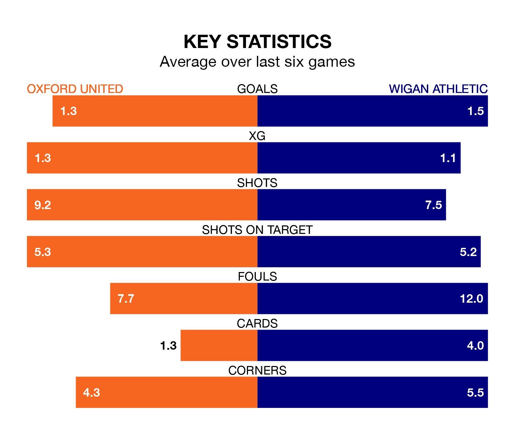

Oxford United face Wigan Athletic at the Kassam Stadium on late Tuesday looking to secure a first win in six EFL League One games.
The Us have lost two and drawn three matches since they last earned three points – against Carlisle United on January 13.
They face a Wigan side who have won three and lost two over that time.
With 50 goals in 31 games so far this season, Oxford are scoring more than average in the league with 1.6 goals per game. And they are conceding fewer than average, letting in 38 goals at a rate of 1.2 per game.
Wigan are also above average scorers, with 1.4 goals per game, compared to a league average of 1.3. They have conceded 1.2 goals per game.
In the last 10 years, Oxford and Wigan have played each other on seven occasions. Oxford won two of them, Wigan four, and they drew once.
On average, the Us scored 1.0 goal and the Latics 2.3 in those matches.
Their last meeting was on October 24, when Wigan won 2-0 at home.
United are seventh in the table after 31 games, of which they have won 15 and drawn seven, earning 52 points.
Athletic are two places behind the Us in ninth, with 13 wins and six draws putting them on 45 points.
Oxford's last match was on Saturday, a 1-1 draw against Blackpool, with Mark Thomas Harris getting the goal for the Us.
Wigan lost 2-1 against Exeter City last time out, also on Saturday, with Charlie Kelman on the scoresheet.
Tuesday's match will be refereed by Jeremy Simpson, who has taken charge of four EFL League One games so far this season, issuing two red cards and booking 26 players. He has not awarded any penalties.
The last Oxford game Simpson refereed was a 1-0 home win against Carlisle United on August 12. He is yet to oversee a match featuring Wigan this season.
Updated: 13:30 (UTC), 12/02/24